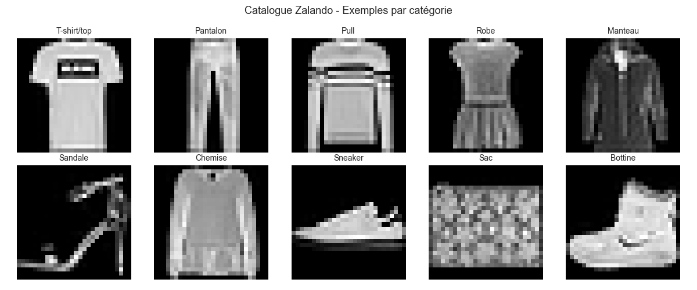
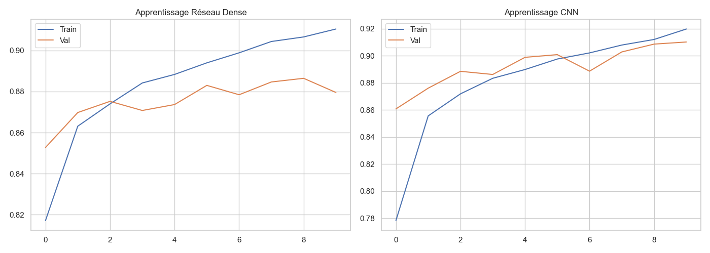
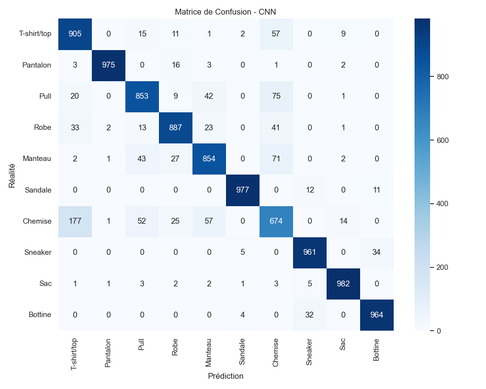
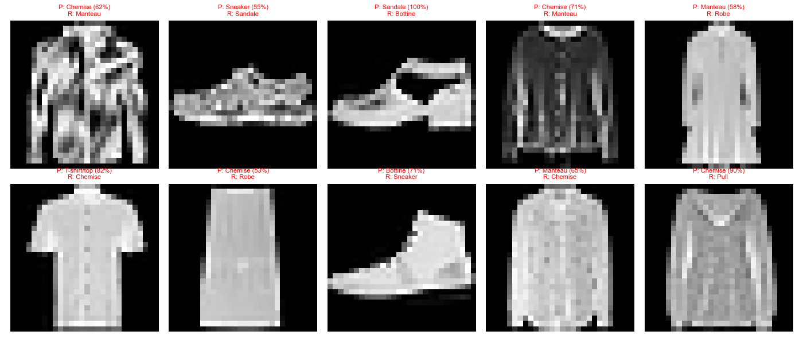
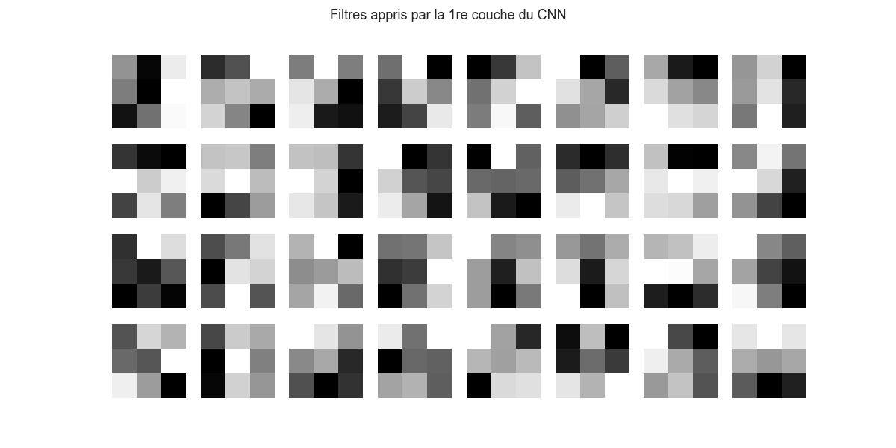
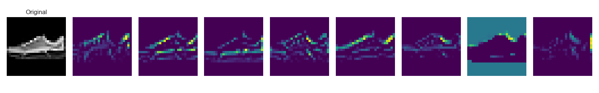

Classification automatique de produits e-commerce (Zalando)
Réalisé par Ilyes Alouata / B3
Zalando souhaite automatiser la catégorisation des produits uploadés par les vendeurs tiers pour réduire le taux d'erreur de 12% à moins de 5%.






Le CNN est le seul modèle atteignant l'objectif de < 5% d'erreur grâce à sa capacité à capturer la structure spatiale des images.
Les erreurs persistent sur les articles de formes similaires (Pull vs Chemise). Une résolution plus élevée en production est recommandée.
Déploiement recommandé avec une validation humaine pour les prédictions dont la confiance est inférieure à 90%.